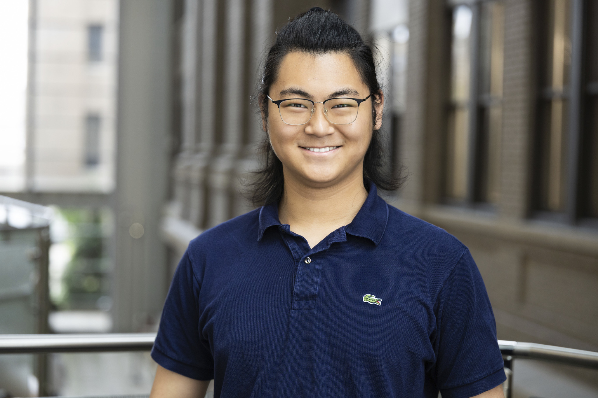

Biomedical Imaging
I work on retinal OCT fluid segmentation, model comparison, and quantitative pipelines that connect machine learning methods with clinically meaningful evaluation.
Pronounced roughly: shyaow yoo, swen
My given name, 霄宇, can be read as “the vast reaches of the heavens.”
I also go by Klay.
I am a student researcher in computer science and mathematics working across computational neuroscience, biomedical informatics, and health data science. My recent work includes retinal OCT fluid segmentation, EEG motor-imagery decoding, and interactive clinical software design for ophthalmic laser planning.

I work on retinal OCT fluid segmentation, model comparison, and quantitative pipelines that connect machine learning methods with clinically meaningful evaluation.
My research includes EEG motor-imagery decoding with complex-valued methods and pupil-data analysis related to learning, engagement, and game performance.
Through Project Femto, I design interactive planning tools for ophthalmic laser workflows, combining user interface design, engineering constraints, and clinician feedback.